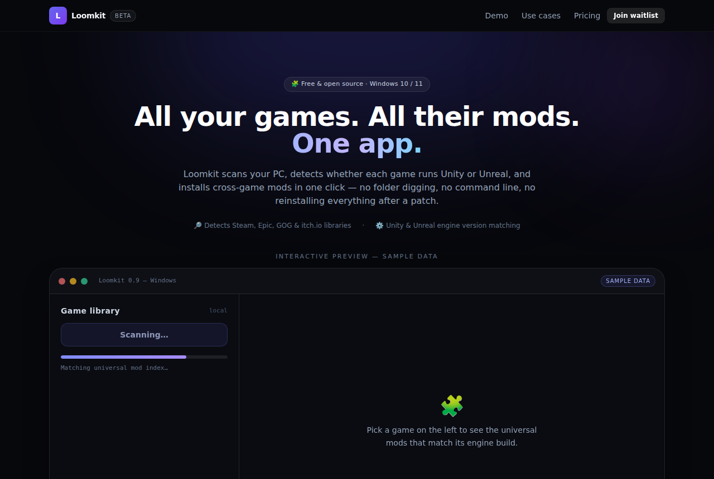

Universal Game Mod Manager: One Mod Manager for Unity & Unreal
Indigo-0167/universal-game-mod-manager · OtherMIT⭐ 1,299

What it is: Universal Game Mod Manager (Indigo-0167/universal-game-mod-manager) is a free, MIT-licensed Windows desktop app that scans your game libraries — Steam, GOG, Epic, itch.io, and PC Xbox — detects whether each game runs on Unity or Unreal Engine, and helps you discover, install, update, and manage mods that work across multiple games on the same engine. No command line: download the zip, keep the exe and libvlc.dll together, and launch.
Why it's taking off: Mod managers have historically been game-specific. The pitch here is a single hub for cross-game mods, especially for Unity and Unreal titles and VR modding, which is a real pain point for players who juggle several modded games. The repo is young and the star count jumped unusually fast, so treat the traction as unverified until there's more history.
Where the product opportunity is: The obvious wedge is a polished installer and update layer — engine version detection, compatibility warnings, and one-click updates are the parts users actually feel. A free core with a paid tier (cloud mod profiles, multi-PC sync, verified mod sources) could work, but the space already has free, mature tools like Vortex, Mod Organizer, and Thunderstore. The safer play is a thin, trustworthy compatibility layer that sits alongside those ecosystems rather than replacing them. Per the README, discovery depends on local metadata and some games need manual setup.
Today's top 5
| # | Repo | Buzz | Startup | Overall |
|---|---|---|---|---|
| 1 | Indigo-0167/universal-game-mod-manager | 6.67 | 6.35 | 6.77 |
| 2 | Nebula4207/av1-video-encoder-gui | 6.33 | 6.8 | 6.73 |
| 3 | kai415-debug/ffmpeg-video-audio-converter | 5.33 | 6.3 | 6.61 |
| 4 | xcl-dev/xcl | 8.33 | 4.6 | 6.36 |
| 5 | mdiri-ai/SoduWork | 6.33 | 6.35 | 6.28 |